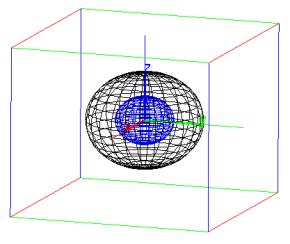
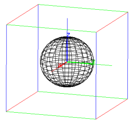

26.2.11 Visualizing waveforms
The plotwav
command displays the waveform of an audio clip.
-
plotwav takes one mandatory argument and one optional
argument:
-
A, an audio clip.
- Optionally, range, which may be one of:
-
range=[offset,length]
for integers offset and length (in samples).
- range=a..b for floating point numbers a and
b (in seconds).
- plotwav(A ⟨,range⟩)
displays the waveform A, in its entirety or over the optional
specified range.
Examples
Assuming that the directory sounds contains two wav
files, example1.wav (a man speaking, stereo) and
example2.wav (guitar playing, mono):
| clip1:=readwav("/path/to/sounds/example1.wav"):;
plotwav(clip1) |
| clip2:=readwav("/path/to/sounds/example2.wav"):;
plotwav(clip2) |

| plotwav(clip2,range=0.5..0.52) |
